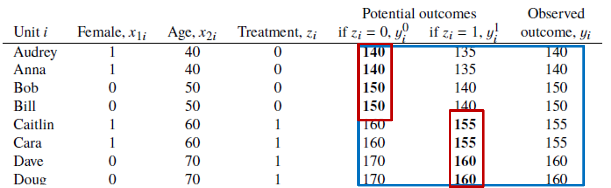
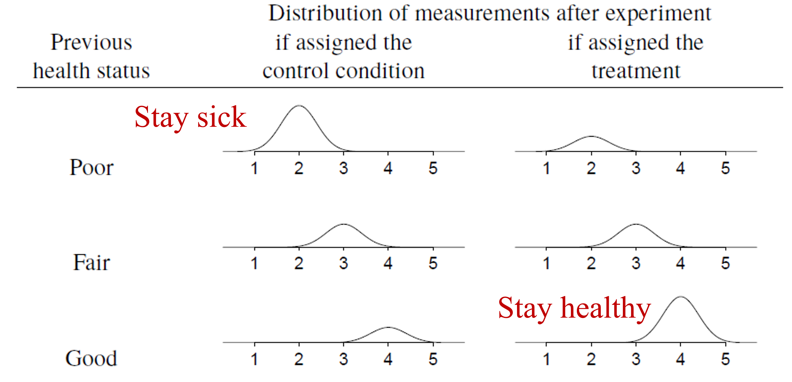

Lecture 7 - Causal Inference
ENCI707: Engineering Demand and Policy Analysis
Outline
- Need for causal inference
- Methods of causal inference
- Propensity score matching
- Instrumental variables
- Regression discontinuity
- Difference-in-differences
- Causal Graph Theory
Causal Inference in Transportation Planning
- Large-scale transportation models principally concerned with prediction
- However, increasingly interested in policy interventions & treatments
Need for Causal Inference - Interpretation
- People are told to run around in a dark room for 5 minutes
- Observation: Men are found to have many more head injuries than women
- Conclusion:
- Women see better in the dark?
- Men are more reckless runners?
Need for Causal Inference - Unobserved Heterogeneity
- Women who smoke have babies that are 600 grams under weight on average
- Problem:
- Is it due to smoking or unobserved factors that are correlated with smoking?
Need for Causal Inference – Endogeneity & Self-Selection
- Cars with side impact airbags have lower injury severities when involved in crashes
- Problem:
- People owning side-impact airbags are not a random sample from the population (likely safer drivers)
- Safter drivers expected to have lower injury severities
Need for Causal Inference – Endogeneity & Self-Selection
- People who take motorcycle safety courses have higher crash rates
- Problem:
- Are courses ineffective?
- People taking the course are not a random sample from the population (possibly less skilled)
Causation = Potential Outcomes
- A key concept in causal inference is potential outcomes
- What happened vs. what could have happened (counterfactual states)
- We will work with several examples to illustrate the principles…
Example: Omega-3 Fatty Acids
Problem: Does consumption of omega-3 fish oil supplements promote a healthy blood pressure?
Experiment: Eight friends agree to be part of an informal study on the relationship between fish oil supplements and systolic blood pressure. Four of the friends are placed in the “fish oil supplement” treatment group. Members of this group agree to consume 3 grams of fish oil supplements per day for one year while otherwise maintaining their current diets. The other four friends agreed to simply maintain their current diets free from fish oil supplements for the same year. At the end of the study period:
- Measure blood pressure
- Assume 160 mmHg and above represents “high blood pressure”
Formal Problem Statement
\[𝑧 = 0 \text{; no fish oil supplement}\] \[𝑧 = 1 \text{; fish oil supplement}\]
- Need to consider two cases:
- Blood pressure given a person did not ingest any fish oil supplement \((y_i^0)\)
- Blood pressure given a person did ingest fish oil supplement \((y_i^1)\)
- Only ever observe one outcome per person – no time machines!
Formal Problem Statement
- Treatment given by \(T_i = y_i^1 - y_i^0\)
- Fundamental problem of causal inference: cannot observe both \(y_i^1\) and \(y_i^0\)
- Can only estimate average causal effect across a sample (population)
Close Substitutes
- What about using pre-study blood pressure as \(𝑦_𝑖^0\)?
- Do not know if person made other changes over the year
- What about using post-study blood pressure as \(𝑦_𝑖^0\)?
- Do not know if treatment has effect into year 2
Average Treatment Effects
- Start with treatment and control groups
- Need sufficiently similar groups – balance
- Beware self-selection bias 
- True average treatment effect = -7.5 mmHG
- Average treatment effect|treatment = +12.5 mmHG
Causal Experiment Design
- Randomized controlled trials are “gold standard”
- Almost never available for transportation/social science research questions
- What to do?
Adjustment for Pretreatment Variables
- Differences between treatment & control variables can be captured by including pretreatment variables in the model
- Addresses both random (variance) and systematic (bias) differences between treatment & control
- Do not adjust for posttreatment variables unless performing more complex analysis – e.g., instrumental variables (IV)
Ignorability Condition
- Ignorability in causal inference: no imbalance between treatment & control, on average
- Assignment to treatment does not imply anything about potential outcome
Causal Inference in Observational Studies
Causal Inference in Observational Studies
- We rarely have access to a random controlled trial
- Observational causation is an exercise in logic & relative causal strength NOT causation
Health Status Example
- Consider 100 patients receive a treatment and 1000 receive the control condition
- Causal truth: treatment has zero effect on health outcomes
- Suppose treatment and control groups systematically differ, with healthier patients receiving treatment
Health Status Example
Adding Predictors: Omitted Variables
- Simple solution is to compare treated and control units conditional on previous health status
- Health status is a confounding variable – affects both treatment & outcome
- If all confounding variable observed, then consistent causal treatment is possible
Omitted Variable Bias
- Correct specification: \[y_i = \beta_0 + \beta_1 𝑧_𝑖 + \beta_2 x_i + \epsilon_𝑖\]
- where \(𝑧_𝑖\) is the treatment and \(𝑥_𝑖\) is the covariate for unit \(i\)
- If \(𝑥_𝑖\) is ignored then: \[𝑦_𝑖=\beta_0^∗+\beta_1^∗ 𝑧_𝑖+\epsilon_𝑖^∗\]
- Using \(𝑥_𝑖=\gamma_0+\gamma_1 𝑧_𝑖+𝜈_𝑖\): \[𝑦_𝑖=\beta_0+\beta_2 \gamma_1+(\beta_1+\beta_2 \gamma_1 ) 𝑧_𝑖+\epsilon_𝑖+\beta_2 𝜈_𝑖\]
- Then: \[\beta_1^∗=\beta_1+\beta_2 \gamma_1 \text{; }\gamma_1=0 \text{ denotes a non-confounding variable}\]
Ignorability in Observational Studies
- Strict ignorability says distribution of potential outcomes same across treatment levels: \[𝑦^0,𝑦_1 \perp 𝑧\]
- Conditional ignorability says the distribution of potential outcomes across treatment levels is the same, conditional on the covariates, \(x\): \[𝑦^0,𝑦_1 \perp 𝑧|𝑥\]
- Must make “leap of faith” that we have conditioned on all necessary confounding variables – selection on observables in econometrics literature
Common Support or Overlap
Propensity Score Matching (PSM)
- Matching: restructure data for statistical analysis
- Goal is to create attribute balance between treatment & control samples
- Five step procedure
PSM: Step 1 - Define confounders & estimand
- Based on relevant literature
- Typically adjust control group to match treated to estimate effect of the treatment on the treated
- Careful! Including additional covariates may increase bias away from the true estimate if not all confounding covariates are available – avoid potential instrumental variables
PSM: Step 2 - Estimating propensity score
- Model of Pr(receiving treatment)
- Typically, a logistic regression for binary treatment, then use propensity score as covariate summary
- Propensity score gives a distance metric
PSM: Step 3 - Matching to restructure data
- Create matched pairs with control samples with closest propensity score – can be with/without replacement
- Better matches with replacement but may overuse some sample units
PSM: Step 4 - Diagnostics for balance & overlap
- Several diagnostics exist based on difference of means, etc.
- Evaluate and change model or method (if required)
PSM: Step 5 - Estimate treatment effect using restructured data
- Estimate regression model with propensity score and confounder variables
- Incorporate data restructuring via weights – typically inverse probability weights
Instrumental Variable (IV)
- When ignorability of treatment seems weak, IV can be a good approach
- Instrument \(z\) should predict the treatment \(T\) but not the outcome \(y\)
- Assumptions:
- Ignorability of instrument
- Monotonicity
- Nonzero association between treatment & instrument
- Exclusion restriction – no instrument effect on excluded variables
IV in Regression
- General framework \[𝑦_𝑖=\beta_0+\beta_1 𝑇_𝑖+\epsilon_𝑖\] \[𝑇_𝑖=\gamma_0+\gamma_1 𝑧_𝑖+𝜈_𝑖\]
- Where \(𝑧_𝑖\) is uncorrelated with both \(\epsilon_𝑖\) and \(𝜈_𝑖\) (ignorability and exclusion restriction)
- Identifiability: whether data contain sufficient information for unique estimation of parameter (or set of parameters)
IV in Regression
- With \[𝑦=\beta_0+\beta_1 𝑇+\beta_2 𝑧+𝑒𝑟𝑟𝑜𝑟\] \[𝑇=\gamma_0+\gamma_1 𝑧+𝑒𝑟𝑟𝑜𝑟\]
- Substituting T into y: \[𝑦=(\beta_0+\beta_1 \gamma_0 )+(\beta_1 \gamma_1+\beta_2 )𝑧+𝑒𝑟𝑟𝑜𝑟\]
- where \(\beta_1\) is our parameter of interest
- Using \(𝑦=\delta_0+\delta_1 𝑧+𝑒𝑟𝑟𝑜𝑟\) where \(\delta_1=\beta_1 \gamma_1+\beta_2\) we get \[\beta_1=(\delta_1−\beta_2)/\gamma_1\]
IV in Regression
- Cannot estimate \(\beta_2\) because error in \(f(y)\) can be correlated with T – exclusion restriction means \(\beta_2=0\) giving \(\beta_1=\delta_1/\gamma_1\)
- Estimation is by two-stage least squares (2SLS)
- Standard errors require adjustment in instrumental variable estimation – should be accounted for in any software package
Exclusion Restriction Plausibility
- One way to assess the plausibility of the exclusion restriction is to calculate an estimate within a sample that would not be expected to be affected by the instrument
- Researchers estimated the effect of military service on earnings (and other outcomes) using, as an instrument, the lottery number for young men eligible for the draft during the Vietnam War
- Randomly assigned number and strongly affected the probability of military service
- Men with low lottery numbers may have altered their educational plans to avoid or postpone military service (would void exclusion restriction)
- Ran IV model for a sample of men who were assigned numbers so late that the war ended before they ever had to serve
- No clear relation between lottery number and earnings, providing support for the exclusion restriction
Weak Instrument
- Only assumption we can test – instrument has non-zero correlation with treatment variable
- If low correlation, then a weak instrument
Regression Discontinuity
- Non-random assignment but mechanism entirely known to researcher
- Consider a policy that gives tutoring to students with test scores < 60
- Consider all students with score in range of 60 – discontinuity at 60
- Works well when discontinuity relates to outcome – e.g., pre-test scores on post-test scores
- Does not work well if comparing across geography due to spatial heterogeneity
Fixed Effect Models
- Use repeated observations within groups – e.g., twin comparisons that holds confounding variables fixed
- Simply a regression model with group-specific intercepts \[𝑦_𝑖𝑗=\beta_0+𝜏𝑧_𝑖𝑗+𝛼_𝑖+𝜖_𝑖𝑗\]
- where j is an indicator of intra-group units
- Requires treatment to vary within groups
Difference-In-Differences
- Comparison across units (typically) using time as an additional dimension of variation
- E.g., effect of new school busing program on housing prices in school district
- Compare prices before/after between district with school busing program and those without it
- A measure of differences in trajectory
Quick Overview of Causal Graph Theory
Causal Graph Theory
- Another perspective on causal inference from computer science – Judea Pearl et al.
- Abstract causal inference to a visual/graphical depiction
- Develop system of symbolic calculus
- Nonparametrically solve identification problem
- Concept of directed acyclic graphs (DAGs)
Causal Graph Theory
- English: Smoking (X), Cancer (Y), Tar (Z), Genotypes(U)
- Directed acyclic graph (DAG)